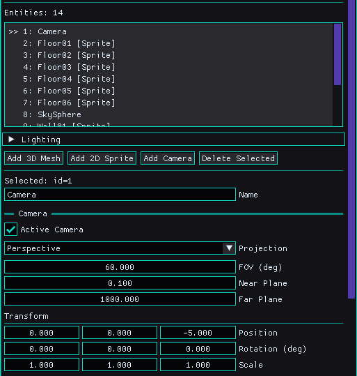
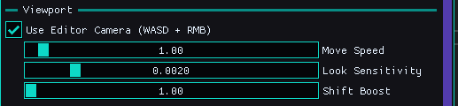

After Scenes, Something Still Felt Off
The last dev log was about scenes. Saving them, loading them, and fixing the subtle ownership bug that made everything fragile.
That work mattered. Retro Game Engine finally had memory.
But once the dust settled, something was still missing.
I could author scenes. I could place entities. I could tweak transforms. But interacting with the world still felt indirect.
Every scene used the same fixed camera.
It worked, but it was frustrating to work with. I needed the ability to set different cameras per scene, and on top of that, a way to utilize an "editor" camera with input controls to move around and examine things better.
Cameras Finally Became Real Objects
Before this update, RetroEngine technically had a camera.
It just wasn’t explicit.
The renderer built a view internally, the scene rendered, and everything worked well enough to move forward.
That approach was intentional early on. It kept the engine simple while the rendering pipeline, materials, and lighting were still in flux.
But once scenes could be saved and loaded, that implicit camera became a problem.
A scene without a camera isn’t really a scene. And a camera that isn’t part of the scene can’t be authored, serialized, or reasoned about.
So cameras became first-class entities.
RetroEngine now supports camera entities the same way it supports meshes and sprites:
- cameras live in the SceneGraph
- they have transforms
- they define projection settings (perspective or orthographic)
- they serialize cleanly into
.scene.jsonfiles - one camera is explicitly marked as active
You can add a camera directly from the editor UI, select it, move it, and save it as part of the scene.

That single change turns the camera from an engine assumption into authored data.
The Editor Camera Is Not Real (And That’s the Point)
This is where the lesson from the previous dev log carried forward.
Just like the editor shouldn’t own renderer state, the editor camera shouldn’t pretend to be a real thing in the world.
So I split them.
RetroEngine now has an EditorCamera that is:
- not serialized
- not part of the SceneGraph
- not saved to disk
- not usable by a game
It exists purely as a tool.
That distinction matters more than it sounds. Runtime cameras need to be deterministic. Serializable. Replayable. Editor cameras need to be fast, forgiving, and ergonomic.
Trying to force those needs into the same abstraction is how engines slowly rot.
Input Is Where Engines Get Messy
Adding an editor camera sounds trivial on paper.
In reality, input is one of the fastest ways to create invisible bugs.
ImGui wants input. The editor viewport wants input. The engine window wants input. Without discipline, everyone grabs at the same state.
The solution here wasn’t clever. It was careful.
The editor camera only updates when:
- the editor camera is explicitly enabled
- ImGui is not capturing keyboard or mouse input
- the user is actually interacting with the viewport
It’s boring code. And that’s exactly what you want.
if (io.WantCaptureKeyboard || io.WantCaptureMouse)
return;
Feel Is a Tool, Not a Constant
One thing that became obvious quickly is that camera feel isn’t universal.
A tight interior scene wants slow, deliberate movement. A large open space wants speed.
So instead of hardcoding values, the editor exposes camera tuning directly:
- base movement speed
- boost multiplier
- mouse look sensitivity
These are editor-only controls. They don’t affect the game. But I can now navigate through a scene and look at it in a spatial sense.

Proof: Moving Through the Scene
At some point, the numbers stop mattering and the experience takes over.
Being able to fly through a scene, stop, adjust, and continue changes how levels are built.
Why Editor and Runtime Divergence Matters
This split isn’t just about convenience.
It’s about protecting intent.
Runtime systems care about determinism, reproducibility, and data. Editor systems care about speed, iteration, and intuition.
By separating them early, RetroEngine avoids an entire class of future compromises.
Anyone working in this engine later won’t have to guess whether a system exists for the game or for the developer.
The code tells the truth.
Roadmap Context
With an editor camera in place, several things that were risky before are now safe.
- scene cameras as serialized entities
- switching between editor view and scene view
- camera controllers and follow logic
- viewport gizmos and direct manipulation
None of those require hacks anymore. They have a clean place to live.
Where RetroEngine Stands Now
- stable scene save/load
- clear ownership boundaries
- explicit editor vs runtime separation
- physical, navigable 3D editor workflow
This update didn’t add spectacle.
It added intent.
And that’s the kind of progress that compounds down the road (hopefully). I'm excited for whats next, and I think it will be involved in adding lights as scene graph entities as well, since that is the last part still living globally at the moment.